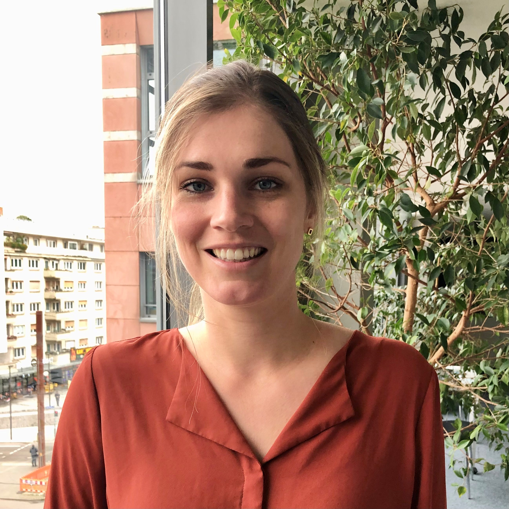

I am a postdoctoral researcher at the Karlsruhe Institute of Technology in Karlsruhe, Germany. My research focuses on advancing mathematical programming by integrating data science techniques directly into modeling and solution processes, emphasizing adaptable, non-learning-based methods. I aim to develop impactful decision-support tools that balance model complexity with solution quality. While my work has primarily centered on location problems, I am expanding my approach to include network flow and routing. Additionally, I develop operational decision-support tools for transportation and logistics during crises, with a growing interest in optimization-simulation methods to capture operational complexities.